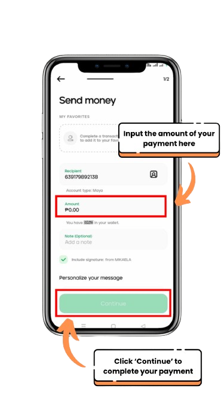

How to Send Using Maya
- Go to Maya App, click the QR Scanner.
- Next, scan the QR Code.
- Once you already scanned the QR code, it will navigate you to transaction page. Input the exact money that you will send.
Screenshot the E-receipt to have a copy of 'Proof of Payment'. Upload the screenshot once you have completed the transaction.
